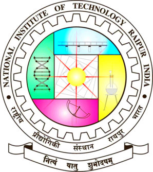

Summer Research Intern
National Institute of Technology Raipur (NIT Raipur)
- Conducted acoustic AI research guided by Dr. Pradeep Singh, Head of Department (CSE) at NIT Raipur.
- Architected a deep hybrid CNN-BiLSTM neural network with self-attention to classify vocal stress biomarkers from Mel-frequency spectrograms.
- Achieved 92% classification accuracy and reduced inference latency by 80% via systematic model pruning and hyperparameter optimization.
- Built a low-latency Flask inference API and deployed model artifacts to Google Cloud Platform for live audio testing.